Устойчивость стационарных точек (Stability of Stationary Points)
Contents
Система с постоянными коэффициентами (System with Constant Coefficients)
Рассмотрим следующую систему линейных дифференциальных уравнений с постоянными коэффициентами
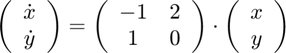
и её стационарную точку 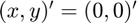. Найдем собственные числа и собственные вектора матрицы
% Определение матрицы системы
A = [-1 2; 1 0];
Определение собственных чисел и собственных векторов матрицы. Эти понятия ключевые при анализе стабильности.
[V, D] = eig(A)
V =
-0.8944 -0.7071
0.4472 -0.7071
D =
-2 0
0 1
В таком случае, решение системы есть
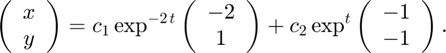
Поскольку 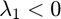, то решение со временем убывает вдоль первого собственного вектора 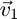. Аналогично, поскольку 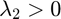, то решение уходит на бессконечность вдоль второго собственного вектора 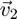. В итоге, мы делаем вывод, что стационарная точка 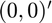 является неустойчивой.
Нарисуем фазовый портрет системы в окрестности стационарной точки. Для этого создадим сетку на плоскости
% Создание сетки для фазового портрета
[x, y] = meshgrid(linspace(-2, 2));
Вычисление приращений для каждой компоненты на основе матрицы A
dx = A(1, 1)*x + A(1, 2)*y; dy = A(2, 1)*x + A(2, 2)*y;
Визуализация фазового портрета с использованием функции streamslice
f1 = figure(1); streamslice(x, y, dx, dy); axis equal; % Визуализация собственных векторов for k = 1 : size(V, 2) line([0, V(1, k)], [0, V(2, k)], 'Color', 'red', 'LineWidth', 1.5); end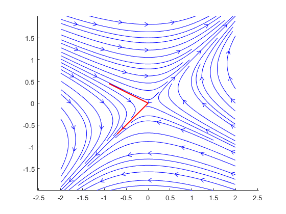
Система с комплексными собственными числами
Рассмотрим следующую систему линейных дифференциальных уравнений с постоянными коэффициентами
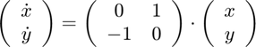
и её стационарную точку . Найдем собственные числа и собственные вектора матрицы
A = [0 1; -1 0]; [V, D] = eig(A)
V = 0.7071 + 0.0000i 0.7071 + 0.0000i 0.0000 + 0.7071i 0.0000 - 0.7071i D = 0.0000 + 1.0000i 0.0000 + 0.0000i 0.0000 + 0.0000i 0.0000 - 1.0000i
После процедуры овеществления базиса (оставим в качестве упражнения), решение системы выписывается в виде
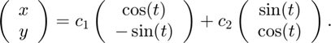
Таким образом, фазовый портрет данной системы - окружности, закрученные по часовой стрелке. Тогда, точка является устойчивой.
dx = y; dy = -x; f2 = figure(2); streamslice(x, y, dx, dy); axis equal; hold on; scatter(0, 0, 40, "red", "*") hold off;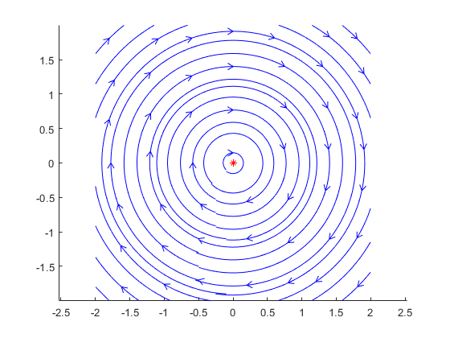
Нелинейная система дифференциальных уравнений
Рассмотрим следующую систему дифференциальных уравнений
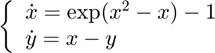
и её стационарные точки 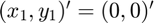, 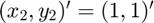.
Для исследования на устройчивость системы нелинейных дифференциальных уравнений требуется линеаризовать систему в окрестности каждой точки и свести задачу к линейной системе с постоянными коэффициентами.
В окрестности точки линеаризованная система имеет вид
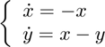
Данная система получается из разложения экспоненты в ряд Тейлора в окрестности нуля
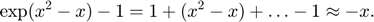
У данной системы имеется одно собственное число 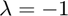 кратности 2. Также, можно проверить, что имеется одна Жордановая клетка, т.е. есть один собственный вектор 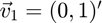 и один присоединенный 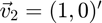.
Решение имеет вид
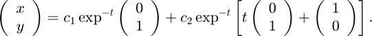
В окрестности точки  введем новые координаты:
введем новые координаты:
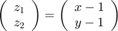
Тогда новая система имеет вид
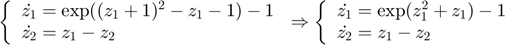
Линеаризованная система имеет вид
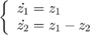
Данная система имеет два собственных числа: 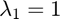, 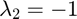. Таким образом, точка является неустойчивой.
dx = exp(x.^2 - x) - 1; dy = x - y; f3 = figure(3); streamslice(x, y, dx, dy); axis([-2 2 -2 2]); axis equal; hold on; plot([0 1], [0 1], '*r'); hold off;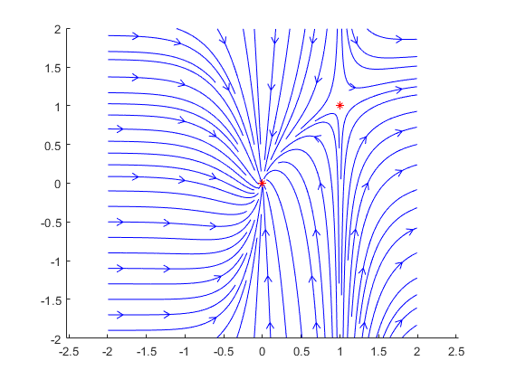